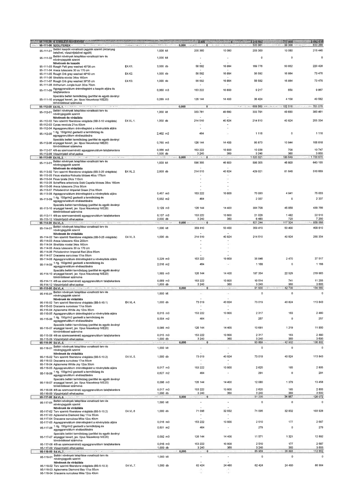

| Tétel | Menny. | Egys. | Anyag e.ár (net HUF) | Díj e.ár (net HUF) | Anyag összesen (net HUF) | Díj összesen (net HUF) | Anyag+Díj összesen (net HUF) |
|---|---|---|---|---|---|---|---|
| 95-110-00 4. EMELETI NÖVÉNYEK | NaN | NaN | 0 | 0 | 4 315 602 | 777 008 | 5 092 610 |
| 95-111-00 SZOLITEREK | NaN | NaN | 0 | 0 | 533 961 | 99 306 | 633 268 |
| 95-111-01 Beltéri kaspók vonatkozó jegyzék szerint (műanyag belsővel, vízszintjelzővel együtt) | 1,000 | kit | 205 360 | 10 080 | 205 360 | 10 080 | 215 440 |
| 95-111-02 Beltéri növények telepítése vonatkozó terv és növényjegyzék szerint | 1,000 | kit | 0 | 0 | 0 | 0 | 0 |
| Növények és kaspók | NaN | NaN | 0 | 0 | 0 | 0 | 0 |
| 95-111-03 Rough Patt grey washed 45*38 cm E4.K1. | 3,000 | db | 56 592 | 16 884 | 169 776 | 50 652 | 220 428 |
| 95-111-04 Areca lutescens 30 cs 170 cm | 1,000 | db | 56 592 | 16 884 | 56 592 | 16 884 | 73 476 |
| 95-111-05 Rough Orb grey washed 48*43 cm E4.K2. | 1,000 | db | 56 592 | 16 884 | 56 592 | 16 884 | 73 476 |
| 95-111-06 Strelitzia nicolai 34cs 160cm | 1,000 | db | 56 592 | 16 884 | 56 592 | 16 884 | 73 476 |
| 95-111-07 Rough Orb grey washed 39*35 cm E4.K3. | 1,000 | db | 56 592 | 16 884 | 56 592 | 16 884 | 73 476 |
| 95-111-08 Anthurium Jungle bush 30cs 70cm | - | - | 0 | 0 | 0 | 0 | 0 |
| 95-111-09 Agyaggranulátum drénrétegként a kaspók aljára és talajtakarásra | 0,060 | m3 | 153 222 | 10 800 | 9 217 | 650 | 9 867 |
| 95-111-10 Speciális beltéri termőközeg (perlittel és egyéb ásványi anyaggal kevert, jav. típus Nieuwkoop NIE20) tömörödéssel számolva | 0,289 | m3 | 126 144 | 14 400 | 36 424 | 4 158 | 40 582 |
| 95-112-00 E4.VL.1. | NaN | NaN | 0 | 0 | 658 560 | 102 516 | 1 700 670 |
| 95-112-01 Beltéri növények telepítése vonatkozó terv és növényjegyzék szerint | 1,000 | kit | 333 781 | 49 680 | 333 781 | 49 680 | 383 461 |
| Növények és virágláda | NaN | NaN | 0 | 0 | 0 | 0 | 0 |
| 95-112-02 Terv szerinti fiberstone virágláda (BB-3-10 virágláda) E4.VL.1. | 1,000 | db | 214 510 | 40 824 | 214 510 | 40 824 | 255 334 |
| 95-112-03 Cycas revoluta 21cs 60cm | - | - | 0 | 0 | 0 | 0 | 0 |
| 95-112-04 Aglaonema White Joy 12cs 30cm | - | - | 0 | 0 | 0 | 0 | 0 |
| 95-112-05 1 rtg. 150gr/m2 geotextil a termőközeg és agyaggranulátum elválasztására | 2,402 | m2 | 464 | 0 | 1 116 | 0 | 1 116 |
| 95-112-06 Speciális beltéri termőközeg (perlittel és egyéb ásványi anyaggal kevert, jav. típus Nieuwkoop NIE20) tömörödéssel számolva | 0,760 | m3 | 126 144 | 14 400 | 95 873 | 10 944 | 106 818 |
| 95-112-07 4/8-as szemcseméretű agyaggranulátum talajtakarásra | 0,066 | m3 | 153 222 | 10 800 | 10 039 | 708 | 10 747 |
| 95-112-08 Vízszintjelző elhelyezése | 1,000 | db | 3 240 | 360 | 3 240 | 360 | 3 600 |
| 95-113-00 E4.VL.2. | NaN | NaN | 0 | 0 | 1 520 021 | 180 649 | 1 700 670 |
| 95-113-01 Beltéri növények telepítése vonatkozó terv és növényjegyzék szerint | 1,000 | kit | 596 355 | 46 800 | 596 355 | 46 800 | 643 155 |
| Növények és virágláda | NaN | NaN | 0 | 0 | 0 | 0 | 0 |
| 95-113-02 Terv szerinti fiberstone virágláda (BB-3-25 virágláda) E4.VL.2. | 2,000 | db | 214 510 | 40 824 | 429 021 | 81 648 | 510 669 |
| 95-113-03 Ficus elastica Robusta törzses 40cs 175cm | - | - | 0 | 0 | 0 | 0 | 0 |
| 95-113-04 Ficus lyrata 24cs 110cm | - | - | 0 | 0 | 0 | 0 | 0 |
| 95-113-05 Schefflera arboricola Gold Capella törzses 38cs 160cm | - | - | 0 | 0 | 0 | 0 | 0 |
| 95-113-06 Areca lutescens 21cs 90cm | - | - | 0 | 0 | 0 | 0 | 0 |
| 95-113-07 Philodendron Imperial Green 21cs 65cm | - | - | 0 | 0 | 0 | 0 | 0 |
| 95-113-08 Agyaggranulátum drénrétegként a növényláda aljára | 0,457 | m3 | 153 222 | 10 800 | 70 093 | 4 941 | 75 033 |
| 95-113-09 1 rtg. 150gr/m2 geotextil a termőközeg és agyaggranulátum elválasztására | 5,032 | m2 | 464 | 0 | 2 337 | 0 | 2 337 |
| 95-113-10 Speciális beltéri termőközeg (perlittel és egyéb ásványi anyaggal kevert, jav. típus Nieuwkoop NIE20) tömörödéssel számolva | 3,129 | m3 | 126 144 | 14 400 | 394 708 | 45 058 | 439 766 |
| 95-113-11 4/8-as szemcseméretű agyaggranulátum talajtakarásra | 0,137 | m3 | 153 222 | 10 800 | 21 026 | 1 482 | 22 510 |
| 95-113-12 Vízszintjelző elhelyezése | 2,000 | db | 3 240 | 360 | 6 480 | 720 | 7 200 |
| 95-114-00 E4.VL.3. | NaN | NaN | 0 | 0 | 821 244 | 117 324 | 938 568 |
| 95-114-01 Beltéri növények telepítése vonatkozó terv és növényjegyzék szerint | 1,000 | kit | 359 410 | 50 400 | 359 410 | 50 400 | 409 810 |
| Növények és virágláda | NaN | NaN | 0 | 0 | 0 | 0 | 0 |
| 95-114-02 Terv szerinti fiberstone virágláda (BB-3-25 virágláda) E4.VL.3. | 1,000 | db | 214 510 | 40 824 | 214 510 | 40 824 | 255 334 |
| 95-114-03 Areca lutescens 40cs 200cm | - | - | 0 | 0 | 0 | 0 | 0 |
| 95-114-04 Cycas revoluta 21cs 60cm | - | - | 0 | 0 | 0 | 0 | 0 |
| 95-114-05 Areca lutescens 30 cs 170 cm | - | - | 0 | 0 | 0 | 0 | 0 |
| 95-114-06 Philodendron Imperial Red 28cs 65cm | - | - | 0 | 0 | 0 | 0 | 0 |
| 95-114-07 Dracaena surculosa 17cs 55cm | - | - | 0 | 0 | 0 | 0 | 0 |
| 95-114-08 Agyaggranulátum drénrétegként a növényláda aljára | 0,229 | m3 | 153 222 | 10 800 | 35 046 | 2 470 | 37 517 |
| 95-114-09 1 rtg. 150gr/m2 geotextil a termőközeg és agyaggranulátum elválasztására | 2,516 | m2 | 464 | 0 | 1 168 | 0 | 1 168 |
| 95-114-10 Speciális beltéri termőközeg (perlittel és egyéb ásványi anyaggal kevert, jav. típus Nieuwkoop NIE20) tömörödéssel számolva | 1,565 | m3 | 126 144 | 14 400 | 197 354 | 22 529 | 219 883 |
| 95-114-11 4/8-as szemcseméretű agyaggranulátum talajtakarásra | 0,069 | m3 | 153 222 | 10 800 | 10 514 | 741 | 11 255 |
| 95-114-12 Vízszintjelző elhelyezése | 1,000 | db | 3 240 | 360 | 3 240 | 360 | 3 600 |
| 95-115-00 E4.VL.4. | NaN | NaN | 0 | 0 | 91 830 | 42 730 | 134 560 |
| 95-115-01 Beltéri növények telepítése vonatkozó terv és növényjegyzék szerint | 1,000 | kit | 0 | 0 | 0 | 0 | 0 |
| Növények és virágláda | NaN | NaN | 0 | 0 | 0 | 0 | 0 |
| 95-115-02 Terv szerinti fiberstone virágláda (BB-5-10.1) E4.VL.4. | 1,000 | db | 73 019 | 40 824 | 73 019 | 40 824 | 113 843 |
| 95-115-03 Dracaena surculosa 17cs 55cm | - | - | 0 | 0 | 0 | 0 | 0 |
| 95-115-04 Aglaonema White Joy 12cs 30cm | - | - | 0 | 0 | 0 | 0 | 0 |
| 95-115-05 Agyaggranulátum drénrétegként a növényláda aljára | 0,015 | m3 | 153 222 | 10 800 | 2 317 | 163 | 2 480 |
| 95-115-06 1 rtg. 150gr/m2 geotextil a termőközeg és agyaggranulátum elválasztására | 0,554 | m2 | 464 | 0 | 257 | 0 | 257 |
| 95-115-07 Speciális beltéri termőközeg (perlittel és egyéb ásványi anyaggal kevert, jav. típus Nieuwkoop NIE20) tömörödéssel számolva | 0,085 | m3 | 126 144 | 14 400 | 10 681 | 1 219 | 11 900 |
| 95-115-08 4/8-as szemcseméretű agyaggranulátum talajtakarásra | 0,015 | m3 | 153 222 | 10 800 | 2 317 | 163 | 2 480 |
| 95-115-09 Vízszintjelző elhelyezése | 1,000 | db | 3 240 | 360 | 3 240 | 360 | 3 600 |
| 95-116-00 E4.VL.5. | NaN | NaN | 0 | 0 | 93 869 | 42 932 | 136 802 |
| 95-116-01 Beltéri növények telepítése vonatkozó terv és növényjegyzék szerint | 1,000 | kit | 0 | 0 | 0 | 0 | 0 |
| Növények és virágláda | NaN | NaN | 0 | 0 | 0 | 0 | 0 |
| 95-116-02 Terv szerinti fiberstone virágláda (BB-5-10.2) E4.VL.5. | 1,000 | db | 73 019 | 40 824 | 73 019 | 40 824 | 113 843 |
| 95-116-03 Dracaena surculosa 17cs 55cm | - | - | 0 | 0 | 0 | 0 | 0 |
| 95-116-04 Aglaonema White Joy 12cs 30cm | - | - | 0 | 0 | 0 | 0 | 0 |
| 95-116-05 Agyaggranulátum drénrétegként a növényláda aljára | 0,017 | m3 | 153 222 | 10 800 | 2 620 | 185 | 2 805 |
| 95-116-06 1 rtg. 150gr/m2 geotextil a termőközeg és agyaggranulátum elválasztására | 0,627 | m2 | 464 | 0 | 291 | 0 | 291 |
| 95-116-07 Speciális beltéri termőközeg (perlittel és egyéb ásványi anyaggal kevert, jav. típus Nieuwkoop NIE20) tömörödéssel számolva | 0,096 | m3 | 126 144 | 14 400 | 12 080 | 1 379 | 13 458 |
| 95-116-08 4/8-as szemcseméretű agyaggranulátum talajtakarásra | 0,017 | m3 | 153 222 | 10 800 | 2 620 | 185 | 2 805 |
| 95-116-09 Vízszintjelző elhelyezése | 1,000 | db | 3 240 | 360 | 3 240 | 360 | 3 600 |
| 95-117-00 E4.VL.6. | NaN | NaN | 0 | 0 | 91 206 | 34 867 | 126 072 |
| 95-117-01 Beltéri növények telepítése vonatkozó terv és növényjegyzék szerint | 1,000 | kit | 0 | 0 | 0 | 0 | 0 |
| Növények és virágláda | NaN | NaN | 0 | 0 | 0 | 0 | 0 |
| 95-117-02 Terv szerinti fiberstone virágláda (BB-5-10.2) E4.VL.6 | 1,000 | db | 71 096 | 32 832 | 71 096 | 32 832 | 103 928 |
| 95-117-03 Aglaonema Diamond Bay 17cs 55cm | - | - | 0 | 0 | 0 | 0 | 0 |
| 95-117-04 Dracaena surculosa 12cs 40cm | - | - | 0 | 0 | 0 | 0 | 0 |
| 95-117-05 Agyaggranulátum drénrétegként a növényláda aljára | 0,016 | m3 | 153 222 | 10 800 | 2 510 | 177 | 2 687 |
| 95-117-06 1 rtg. 150gr/m2 geotextil a termőközeg és agyaggranulátum elválasztására | 0,601 | m2 | 464 | 0 | 279 | 0 | 279 |
| 95-117-07 Speciális beltéri termőközeg (perlittel és egyéb ásványi anyaggal kevert, jav. típus Nieuwkoop NIE20) tömörödéssel számolva | 0,092 | m3 | 126 144 | 14 400 | 11 571 | 1 321 | 12 892 |
| 95-117-08 4/8-as szemcseméretű agyaggranulátum talajtakarásra | 0,016 | m3 | 153 222 | 10 800 | 2 510 | 177 | 2 687 |
| 95-117-09 Vízszintjelző elhelyezése | 1,000 | db | 3 240 | 360 | 3 240 | 360 | 3 600 |
| 95-118-00 E4.VL.7. | NaN | NaN | 0 | 0 | 85 959 | 26 893 | 112 852 |
| 95-118-01 Beltéri növények telepítése vonatkozó terv és növényjegyzék szerint | 1,000 | kit | 0 | 0 | 0 | 0 | 0 |
| Növények és virágláda | NaN | NaN | 0 | 0 | 0 | 0 | 0 |
| 95-118-02 Terv szerinti fiberstone virágláda (BB-5-10.3) E4.VL.7. | 1,000 | db | 62 424 | 24 480 | 62 424 | 24 480 | 86 904 |
| 95-118-03 Aglaonema Diamond Bay 17cs 55cm | - | - | 0 | 0 | 0 | 0 | 0 |
| 95-118-04 Dracaena surculosa 12cs 40cm | - | - | 0 | 0 | 0 | 0 | 0 |
